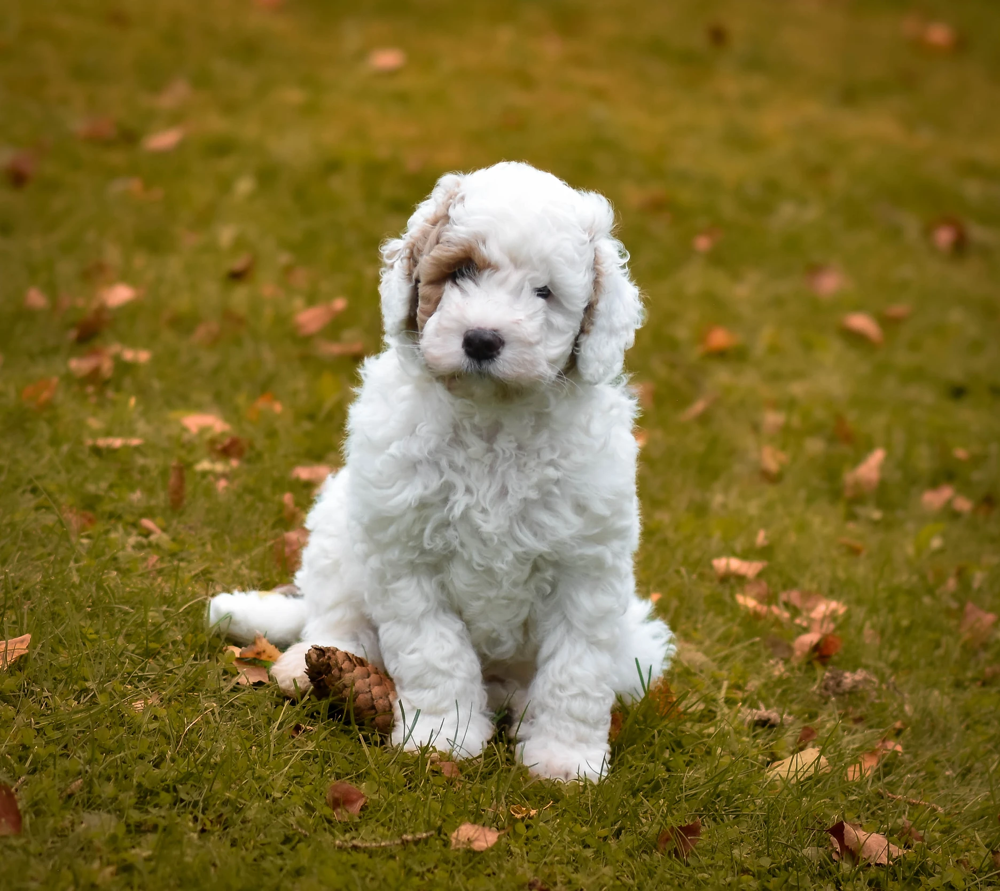
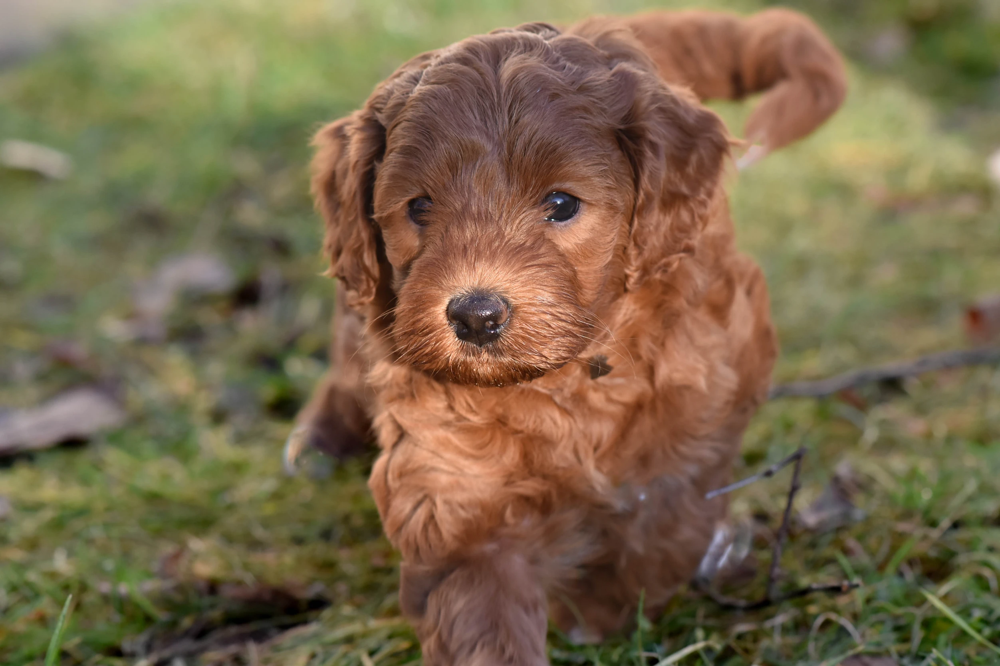
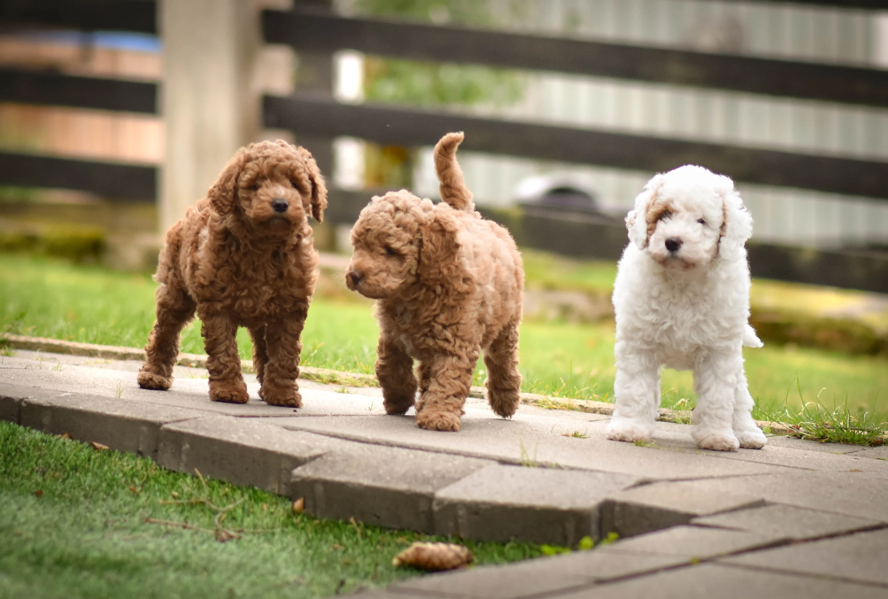
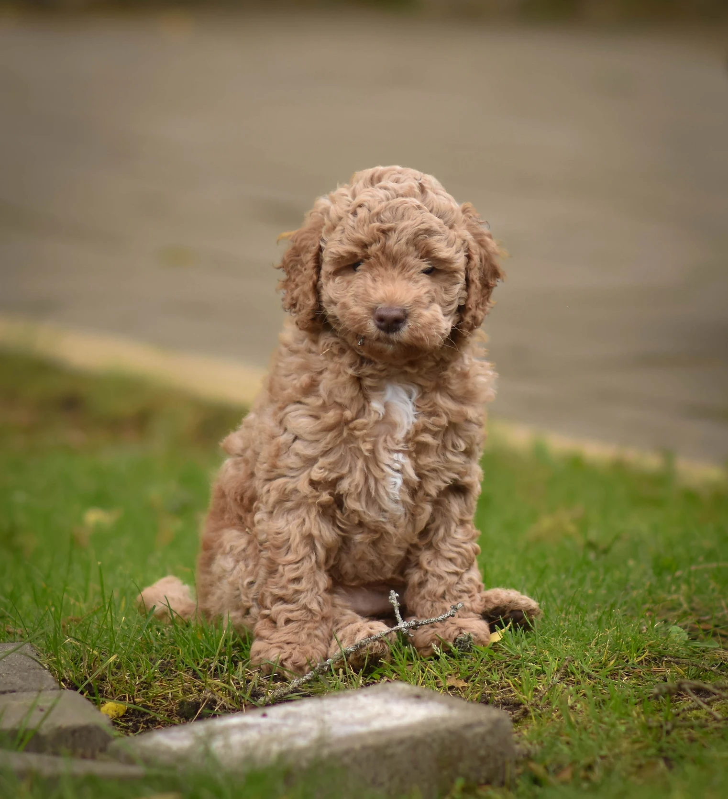

<div class="slideshow-container">
  <div class="slideshow">
    
    
    
    
    <!-- Dubbel uppsättning bilder för sömlös loop -->
    
    
    
    
  </div>
</div>

<!-- Script -->

<script>
  window.onscroll = function () {
    var header = document.getElementById("myHeader");
    if (window.scrollY > 50) {
      header.classList.add("scrolled");
    } else {
      header.classList.remove("scrolled");
    }
  };
</script>
    <script>
      // Get the button:
let mybutton = document.getElementById("myBtn");

// When the user scrolls down 20px from the top of the document, show the button
window.onscroll = function() {scrollFunction()};

function scrollFunction() {
  if (document.body.scrollTop > 20 || document.documentElement.scrollTop > 20) {
    mybutton.style.display = "block";
  } else {
    mybutton.style.display = "none";
  }
}

// When the user clicks on the button, scroll to the top of the document
function topFunction() {
  document.body.scrollTop = 0; // For Safari
  document.documentElement.scrollTop = 0; // For Chrome, Firefox, IE and Opera
}
    </script>